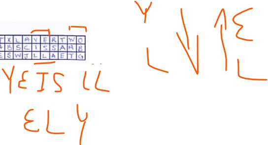
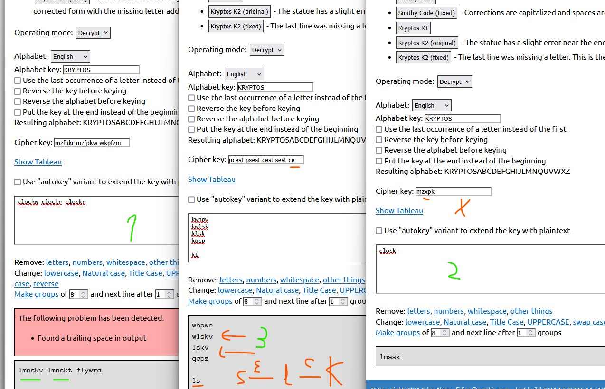
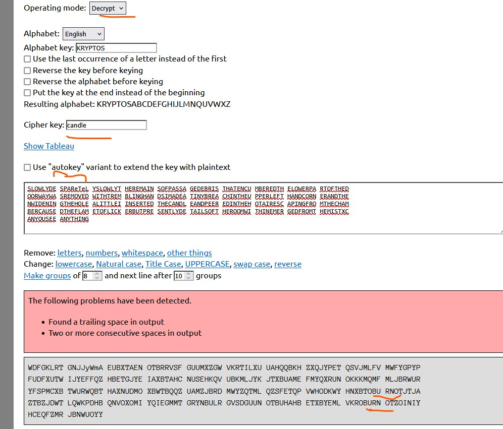
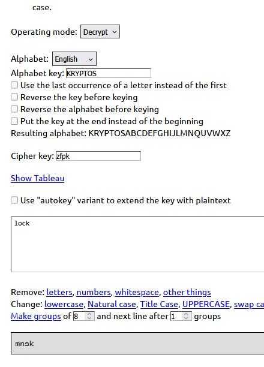

Kryptos
Introduction
Kryptos is a sculpture by sculptor Jim Sanborn that has been installed in the CIA offices in Langley since 1990.
Analysis
K0
The first thing to solve is the morse code or K0. Once solved, several things stand out.
The placement of the words, left to right and from top to bottom and from right to left and from bottom to top.
The e is the most used letter in English.
The existence of the palindrome in interpretation.
Morse itself, its structure and design. Playing with dots, two letters give rise to one. As GT forms Q. Also three dots form a line.
We forces e, which can be interpreted as f or c, w for c, e for c.
Digital, dig is to extract, if we remove a dot from the i in morse it becomes an e.
T is your position, tposition can mean transposition. Or t is y or t is your p.
SOS stresses the importance of Morse code.
RQ could mean request but also the radio codes RQ, back to Morse code.
The placement of T IS, SOS and RQ stands out, the pyramid they form. It should be noted that IOQ is vigenère, which will be seen later.
Finally, the number of letters e stands out, as if something had been extracted or moved back.
Overview
In the sculpture it stands out that a vigenère table is shown, this table has an alphabet of 31 letters except for the letter N which has 32, highlighting an L. The word he uses is kryptos, which means secret. It stands out that if we take 26 letters of the alphabet, the following ones are like reversing the meaning. Although it shows this table, it is not the one used to decrypt K1 and K2. Note that the alphabet rotates (go back) one position in each letter.
If we grouped the encrypted message from the letters END to the end into 14 rows of 31 characters we began to see things.
The word END and DOT appear. Below we see TWO, L-shaped OXO, AIR and KRSO(T)YP (kryptos) as indicating a transposition or change of order or direction. PGP also appears (Sanborn and the CIA knew of its existence before being published?) and KR (private part) and KU (public part).
We can see words like STEW, SITE (sitego, stego), HARD placed in column in the ciphertext and DIG(K) and STONE (vertically). RACK appears backwards, which means grid, which could be a reference to rail-fence.
The grouping of 3 T vertically and the vertical XTT in the lower corner stands out.
If we look closely at all the cipher text at the top and bottom we see a key but in the opposite direction.
Best quality handwritten cards of Jim from the NYT
In the upper left corner from the END we see ENDYAHR where the letters YA_R are raised. It can be read as HR A DY (hours in a day), as YEAR, as the initials of yellow, amber, red, or as a pattern.
K3
In my opinion, this is the next fragment to decrypt. It is a transposition that goes from the E of the END to the last ?. First group the letters into rows with a total of 24 characters per row and then turns them counterclockwise. Next, form lines of 8 characters and turn again in the opposite direction.
The text is a fragment of Howard Carter's diary notes upon discovering Tutankhamun's tomb.
If we calmly analyze the text, we see that it tries to tell us something more than a way to proceed. The text seems to be missing a letter E, has an extra Q and there is an A instead of an E in DESPARATLY.
It talks about removing debris from the bottom of the door, although doorway is door in English, it can also be portal, entrance or step. If we separate door (entrance) and way, way means by itself the form, the path or the mode or the manner. Remains can be interpreted as remain (remain, stay, be) (-S). Main means main, major, important or master (-S) and mains means electric network.
Passage means the passage or the approval but if we separate pass (pass, approve, overcome, advance, the step) and age (time). Encumber means to load, overload, encumber or engrave but (C-)umbered means numbered. Breach means breach, to open a gap (verb), to infringe or infringement or non-compliance. Reach means reach, distance, extension or wingspan. But also reach(verb), arrive, encompass, lengthen or extend.
He may be telling us that there is debris or a mask between the correct encryption and the one we see that needs to be removed, he may be telling us how. Passing or giving it a pass. It may be possible for us from K2. These remains get in the way or overload or may indicate numbering. We are also not very clear about what the bottom part is, perhaps the END. It can be read REACH IN THE UPPER LEFT HAND CORNER (extends in the corner of the left hand or perhaps tells us about the error of K1 or the end of K3) and H IN T (hint, hint). He talks about inserting the candle, and that the hot air coming out of the chamber made the flame flicker presenting the details of the room. Talk about removing very slowly, cameras capture a moment of time, a state. But putting frames together we can see a sequence. Perhaps each letter of K4 must be drawn in a specific state, so that a series of intertwined states is traversed.
Hot air is O2 which is CO2, flashes like YA_R (a pattern or traffic light or the time in a year or day?), details contains tail. It is also seen that in the K3 ciphertext in the upper corner END,AC,T as candle. Perhaps the L in the vigenere table is related to K3 or K1. In my mind, fits place YA_R + candle =calendar.
DETAILS OF THE ROOM WITHIN EMERGED FROM THE MIST X, can be read as he lost T (although losing in English is miss) or united (merge, merge, join) for the lost T.
Note that CHAMBER has amber, PEERED has red. ENCUMBERED has a network.
Although more information can be obtained from K3 that we will analyze later, let's go to the last two of relevance for now. The final question whose real answer according to the book was "wonderful things" and according to the field notes "Yes, it is wonderful." Is Jim asking us about Qs? or is it is w important? Should we respond (rq=request?)?
To finish and what everyone is wondering, where does the K1 key come from? Easy, the flame flickers but you have to insert the candle. We group the plain text:
K1
It is made up of the first 63 characters, the key is palimpsest, which refers to a manuscript that preserves traces of another previous writing in the same surface, but expressly erased to give way to what now exists. It is deciphered with Vigenère although not with the table that Jim gives us. The table used in the upper header begins with kryptos and in row A ends with kryptos, encrypting Z with A gives S. Here the clues end stand out as indicating positions of the word kryptos and T IS YOUR POSITION so that the last rows of encryption T...YP matches with the Vigenère table that is used where the row of the T ends in YP.
In decryption we see an error in iQlusion, if we use S when decrypting but if we use C we see illusion. With S the coded letter would be W. The text tells us about shadows and absence of light (darkness), in addition to being or lying the nuance (double meaning in English) of the illusion or of the Q and the C? In an observant way you can read between s and t or between s and a or between g and t or between g and a or between ing (final ingq of K3) and abs (abscissa).ILL appears in the K4 ciphertext.
K2
The key of K2 is taken from the plaintext of K1 and palimpsest using the Vigenère table of K1, if we use the morse words allyinvisible we obtain the keyword abscissa. It tells us about transmitting information using the Earth's magnetic field. It gives us some coordinates, which supposedly corresponded to the place where an American USGS was buried. Towards the end of the text Jim removed an S in the cipher and the end is decrypted as IDBYROWS (identified by rows?) although it is actually XLAYERTWO.
If we place the plain text of K2 in rows of 8 characters, at the end it reads TWO OXO in the shape of an L. Also we read rest, as stop,pause, remain or support
Let's start playing
Jim has given some K4 plaintext words like BERLINCLOCK and EASTNORTHEAST. He also commented that we should investigate more about the Berlin clock.
The L shape two oxo is striking because it is reminiscent of the 3 in a row and oxo is the nomenclature for oxides. Hot air creates CO2. The C in iqlusion becomes important.
If in K3 we take the ciphertext without errors (desperately and without q) and decrypt them with the abscissa keyword, openncq, obk and YPCOLCXTS appear. Highlight oppencq (R. Oppenheimer).
There are groupings of three consecutive letters in K3 cipher that appear 2 times and decipher K4 using the K1 table like OIE or MRI.
If we look closely and place the K3 ciphertext in rows of 31 characters in row 10 we have an L and an F and above these in row 9 and 7 DA and RE respectively, which could correspond to decrypting EA of the first EAST.
YAR if we turn it around in Morse we have QNR that coincides with N of NORTH in K4.NRQ in code RQ means noise.
Central European Time or Central European Time or CET is one of the names of the time zone that is one hour ahead of Coordinated Universal Time (UTC). It is used in most European countries and those in North Africa. Its time offset is UTC+1 during standard time and UTC+2 during summer time. (Central European Summer Time, CEST, time to take advantage of sunlight). Central European Time or Central European Time is also known by other names, such as Middle European Time. In the past it was known as Berlin time. Maybe palimpCEST is another clue, and the missing S is relevant, 2 layers.
In K4 north, th are decrypted as TWR and HON, request (RQ), the hot air of K3, the answer to the WOnderful question.
If we catch K2 with the error at the end of removing the encrypted s, and instead of decrypting with abscissa we do it with bscissaa we see playertwo (3 in a row) and 3 Ts.
If we take K2 without the error at the end of removing the encrypted s, and instead of decrypting with abscissa we do it with aabsciss we see LOOX, dig K, LOOK and HEAT which means hot, warm up or elimination.
But if we take the complete ciphertext with s and decrypt it with abscissa, We take the text it gives us and decrypt it with bscissaa and so on until we do it with cissaabs, we see that clockr appears. Which could be lock r.

If we take that encrypted text with clockr at the end and use the original decrypted text as a key we see STOP.
If we take that ciphertext with clockr at the end and use it as a key to decrypt the original plaintext, we see VUWTT. Like YAHR, we have VWT in K4, just like UWT in K4.
A second OXO is also seen in K2 in the plain text.

If we look at plain K2 without errors and see that O-QX-TWO appears inserted in K4 as a cipher.
If we try to decrypt K2 without errors with encrypted K4 as the key, at the end we see qqrth, which attracts attention. However, it does not match the encryption in K4 in the north position, perhaps because the encrypted K4 must be reordered to use it as key.
If we take K2 encrypted with the S of XLAYERTWO and successively decrypt it with absc, we see AIR:
If we continue deciphering we see that it wants to show itself palimpcest, abscissa, back, invisible, flicker:
If we take K2 encrypted without errors and use candle as the key to decrypt, pairs of K4 plain key encrypted characters begin to appear. If we remove some characters and apply successive decryptions, pairs appear but we do not arrive at a complete text. Here we highlight the pattern of YA_R, the O2 to OCO (CO2) that passes to X and the RQ of NRQ. If this is the way to decrypt, we need to know precisely which letter to remove or how to move the letters.
If we place the encrypted K1 in rows of 18 characters, we begin to decrypt, we see in the last column ILO, if we take that text and decrypt it with alimpsestp we see that it begins with RQIOBOBKL, if we continue substituting by moving letters of the key in In the last column we have DKO, which coincides in K4 with DKO-OLI.
If in K1 we decrypt with palimpwest (w for c) we see the word plus, more or positive.
If in K1 we decrypt with alimpcestp (w for c) and changing the alphabet (ryptosk, dig k) we see draft as draft or airstream.
Several things stand out in K4, the first is Q?OBKR. It resembles lock of clock or maybe rock. If we look at decrypting clock in K4, CBAQK appears, which is like back, and the Q appears in the middle. Note that the end of K4 is KCAR. It appears next to BERLINCLOCK. CLOCK contains lock, close. If we look at kryptos visually it seems that there are two inverted keys. In Berlin there is a key that when we open a door we can only recover the key by closing it. This key is inserted, turned, pushed a little more, turned from the other side and pulled from the opposite side to where it was inserted. There were also doors on the Berlin Wall that had two locks and needed two different keys and two people to open. Maybe clock is an intentional error instead of block.
Words in K3 such as ENCUMBERED AMBER and TREMBLING are also striking, they remind us of Berlin.
The end of K3 and berlinclock is reminiscent of the Bendlerblock.
In K2 maGneTic, it coincides that there is QR encryption and that NE in Morse is D and NI in Morse is B
The coordinates of K2 are within the CIA and Jim buried a USGS. Seismic waves transmit energy between two consecutive points (propagation) and seismographs collect this information. A USGS is a reference point for a variety of things besides earthquakes. Jim comments that it had been removed and we don't know what the USGS was. But he said it had some threads crossing. The USGS has drawings, lines or arrows that indicate direction or alignment in the measurement. Circles and crosses indicate the exact reference point (oXo).
If we look at K1 and K2 and remember K3 (mis T), we see litle (little). In K3 it says that it widens the gap a little.
Analyzing Jim's lyrics
Some people have seen or Jim has published some parts of the original papers in Jim's handwriting.
Starting with an interview in NovaScience, we see several things. Jim wrote desparatly with a lowercase e. We see two types of letters A, some with an upward peak. We see that in the plain text organized in rows of 42 characters, there is a letter c or p on the sides of each row, which can be cipher and plain or candle and palimpsest. This leads to thinking of palimpsest as plaintext. Row five has a different p, its suit is different. You also see some strange Y letters. The marks on the right and the end point in the K3-K4 matrix are striking. It should be noted that on both tab 1 and 2 there is a diagonal mark. In the video you can see that Jim makes a few turns the K3-K4 matrix. We also see that on sheet 2 there are some beak-shaped marks outside the text (bottom left corner), which can indicate rotation, as in an S.
If we analyze K1-K2, the two arrows that appear in the first two rows stand out, as well as the marks in the IEK and ELY. ELY appears in K4 flipped as a key. And if we use IEK as a key, RIL appears, which could be brilliance. In encrypted K3 we see how it tries to appear magnetic from K2.
In K1 we see a strange p like the one that accompanies plain K3. The first h of the cipher looks like a pillow (#), we see some Y with less curve compared to others with plain K3. We see a lowercase letter E, we see T and I that seem accompanied by a thin line, we see A with a peak and without a peak, E that look like B or is deformed or with a dot and others not, we see I with dots, a C accompanied by a dot. A normal person does not change from single capital letters to lower case or write two types of A,E,I,Y, T or P in the same message unless they are hiding something.

In K2, dots are again seen accompanying letters, modified letters, a peak in row 8 of K1-K2, perhaps rotation. We see Bs crossed out with X, a letter e and a lowercase d that reminds us of pc spinning, the first question that contains or marks the first key with 99 characters compared to the 97 of K4, a breach that matches an encrypted w and that in K4 matches R of AIR in a TWR manner. The breach coincides with invisi, and the Morse e's with GWH. GW of K3 G and the final encrypted W of Q, with LSW or QSK. The WH of the last K3 cipher letters. In plain text you see RED in GATHERED and BURIED, so it flashes and matches the lowercase. It highlights letter patterns like ETG and close to K3's ENCUMBERED, as if it were changing letters and the presence of the Q in the middle.

We also observe other curiosities such as the relationship between NOR and RED, or GREDN for green or games like red escaping from amber, since abs gives ab.
If we take amber in morse and red we see that if we take away one point from B or one point from M we get D.
In K2 there is an error in undergruund that does not exist in Jim's cards. This is probably an accidental mistake.
If in K2 we take the encryption without the S of WESTXLAYER and start decrypting but using bscissaa instead of abscissa, the following draws attention.
If we continue decrypting by moving the key we see the following:
If we continue decrypting by moving the key we see the following:
If we carry out this process but in the opposite direction:
If we take half of K2, we turn it over and decrypt it with alimpcestp (based on the lowercase e and d) we see the following:
Red escaping from amber is yellow. If you look at the end of K2 in LAYERTWO, YE IS LL and LL goes to WO with SH.
If we use yellow as the K2 key:
Komitet
Elonka received an email whose text said that the key to kryptos is komitet. Komitet is the meaning of the first letter of the KGB. It is believed that the KGB used clock signals as a messaging system. This agency operated in Berlin and clock systems could include light games such as blinking (similar to Morse) or the use of hours as a system of hidden messages.
If we start playing with the word komitet, we see some things in K1 and K2:
Observations
Jim has said that there is a bit of stenography related to K4. Maybe clockr from K2, maybe the key shape from K1-K2 and K4 or maybe kryptos is a single-use notebook.
Jim has indicated that there are false clues and i believe that when he speaks he lies about some things to mislead (counter-intelligence).
There are historically important nuances. The statue was installed in 1991 by and for the CIA. Jim has said several times that it should be solved with a pencil and paper (I don't know if it was a CIA requirement) but the first graphical interface is from 1973 with Xerox and in 1997 Windows 97 was released. Computers were not so popular, its programs and power were much inferior to those of today and the 1997 interface was terrible. The Internet was not a thing for everyone, nor was it like it is today. Jim started getting paid a lot later supposedly because everyone sent him solutions and they took up time and then also angry people frustrated with negative messages. It was a way to screen and eliminate these messages. But Jim couldn't know about the advance of the Internet in 1991.
Maybe palimpsest comes from forming a matrix with Morse and transposing.
Jim commented that K4 is possible to be resolved without K1,K2 and K3 but I only think that would be possible if K4 needs a reorder and K1-K2 works as a single-use pad or K4 is the key and ciphertext at the same time.
Jim commented that K4 is the only one that can be solved without the rest but it is not true. K3 can be solved without the rest.
You might think that the matrices K1-K2 and K3-K4 have some relationship like some type of mirror with an effect.
After K2 was decrypted minus the error, Jim later revealed the error. He himself gave importance to this by telling it himself, as if he were giving another clue.
K4
The PGP seems too far-fetched to me to be able to be solved on paper as is, perhaps for K5. The thing about removing and adding points may be interesting in Morse but it seems far-fetched to reformulate the cipher in Morse. Maybe adding characters to K2 of K4 in specific positions can show something but it also seems gimmicky. So I have 3 theories.
Simple replacement by encryption groups (like an OTP notebook) after ordering k4, like RTH, although it may only be using a reordering and a key as in K1.
Which is being encrypted using a stream cipher based on the previous text or using several letters of the K1-K2 cipher for a letter of K4, perhaps like the Berlin key.
I believe and it seems more realistic to me that he is burning letters from K1-K2, but I don't know how to get a clear pattern. This seems to me more typical of an artist, who has only received 3 or 4 months of information about cryptography, than other methods. But I don't know how to use the Berlin clock.
The clock he is referring to is the Mengenlehreuhr, which uses a set theory formula, or World Clock, perhaps it is playing with time zones and measurement systems (UTC, CET,CEST,WEST,WET, GMT, EET...). Jim has written a book on atomic time. That is quite likely too.
NATO phonetic alphabet(see C,O, R,S,X)
I think someone has solved K4 and it is being used as a recruiting test by the CIA.
There is the option of using a scythele in Kryptos due to its shape.
Playing one day with the alphabet and shifting and replacing, I found the following fragments, but I can't remember how: DRYAINF and CHECKVERT. Finding words like alpha, year, fox,... could be a coincidence, but with 7 or more words, the probability is low. DRY A INF might mean dry information, a reference to WET (wet or time zone?). Does CHECKVERT check or revise vertically or vertically?
Others






DRIFT,RIFT,DRAFT
Questions for Jim
Will we know everything he learned about cryptography to make Kryptos in book form or another format?
How did he get the USGS?
Could he draw or explain what was important about the USGS? Did he modify it, with a mark or something?